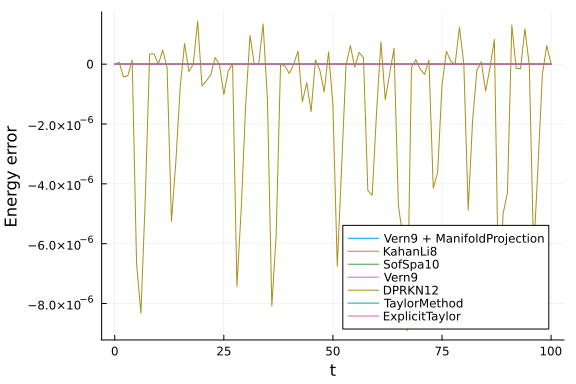
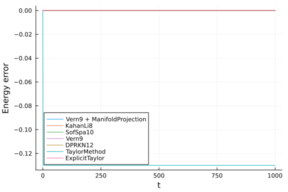
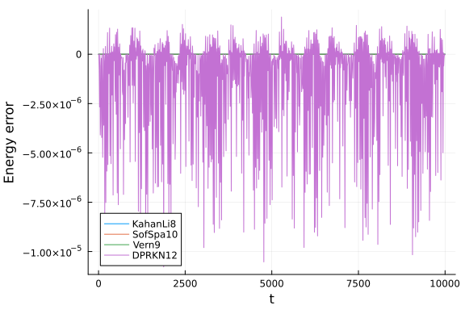
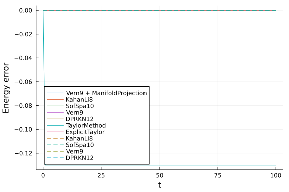
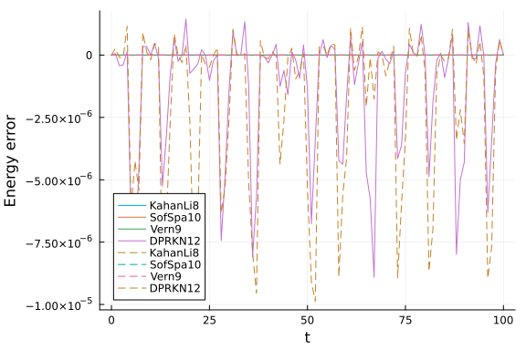
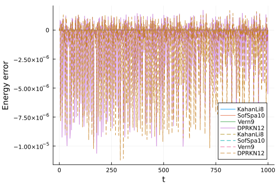

Hénon-Heiles Energy Conservation
In this notebook we will study the energy conservation properties of several high-order methods for the Hénon-Heiles system. We will see how the energy error behaves at very tight tolerances and how different techniques, such as using symplectic solvers or manifold projections, benchmark against each other. The Hamiltonian for this system is given by:
\[\mathcal{H}=\frac{1}{2}(p_1^2 + p_2^2) + \frac{1}{2}\left(q_1^2 + q_2^2 + 2q_1^2 q_2 - \frac{2}{3}q_2^3\right)\]
We will also compare the in place approach with the out of place approach by using Arrays (for the in place version) and StaticArrays (for out of place versions). In order to separate these two, we will use iip for the in-place names and oop for out of place ones.
using OrdinaryDiffEq, Plots, DiffEqCallbacks
using OrdinaryDiffEqRKN, OrdinaryDiffEqSymplecticRK
using OrdinaryDiffEqTaylorSeries
using SciMLBenchmarks
using TaylorIntegration, LinearAlgebra, StaticArrays
gr(fmt = :png)
default(fmt = :png)
T(p) = 1 // 2 * norm(p)^2
V(q) = 1 // 2 * (q[1]^2 + q[2]^2 + 2q[1]^2 * q[2] - 2 // 3 * q[2]^3)
H(p, q, params) = T(p) + V(q)
function iip_dq(dq, p, q, params, t)
dq[1] = p[1]
return dq[2] = p[2]
end
function iip_dp(dp, p, q, params, t)
dp[1] = -q[1] * (1 + 2q[2])
return dp[2] = -q[2] - (q[1]^2 - q[2]^2)
end
const iip_q0 = [0.1, 0.0]
const iip_p0 = [0.0, 0.5]
function oop_dq(p, q, params, t)
return p
end
function oop_dp(p, q, params, t)
dp1 = -q[1] * (1 + 2q[2])
dp2 = -q[2] - (q[1]^2 - q[2]^2)
return @SVector [dp1, dp2]
end
const oop_q0 = @SVector [0.1, 0.0]
const oop_p0 = @SVector [0.0, 0.5]
function hamilton(du, u, p, t)
dq, q = @views du[3:4], u[3:4]
dp, p = @views du[1:2], u[1:2]
dp[1] = -q[1] * (1 + 2q[2])
dp[2] = -q[2] - (q[1]^2 - q[2]^2)
dq .= p
return nothing
end
let u = vcat(iip_p0, iip_q0), du = fill(NaN, 4)
u_before = copy(u)
hamilton(du, u, nothing, 0.0)
@assert u == u_before "hamilton must not mutate its input state"
@assert du ≈ [-0.1, -0.01, 0.0, 0.5] "hamilton returned an incorrect derivative"
end
function hamilton_taylor!(du, u, p, t)
du[1] = -u[3] * (1 + 2u[4])
du[2] = -u[4] - (u[3]^2 - u[4]^2)
du[3] = u[1]
du[4] = u[2]
return nothing
end
function g(resid, u, p)
resid[1] = H([u[1], u[2]], [u[3], u[4]], nothing) - E
return resid[2:4] .= 0
end
function g_jacobian(J, u, p)
J[1, 1] = u[1]
J[1, 2] = u[2]
J[1, 3] = u[3]
J[1, 4] = u[4]
return J[2:4, :] .= 0
end
const cb = ManifoldProjection(g, manifold_jacobian = g_jacobian, nlopts = Dict(:ftol => 1.0e-13))
const E = H(iip_p0, iip_q0, nothing)0.13For the comparison we will use the following function
function energy_err(sol)
return map(i -> H([sol[1, i], sol[2, i]], [sol[3, i], sol[4, i]], nothing) - E, 1:length(sol.u))
end
function abs_energy_err(sol)
return [
abs.(H([sol[1, j], sol[2, j]], [sol[3, j], sol[4, j]], nothing) - E)
for j in 1:length(sol.u)
]
end
function compare(mode = :inplace, all = true, plt = nothing; tmax = 1.0e2)
if mode == :inplace
prob = DynamicalODEProblem(iip_dp, iip_dq, iip_p0, iip_q0, (0.0, tmax))
else
prob = DynamicalODEProblem(oop_dp, oop_dq, oop_p0, oop_q0, (0.0, tmax))
end
prob_linear = ODEProblem(hamilton, vcat(iip_p0, iip_q0), (0.0, tmax))
prob_taylor = ODEProblem{true, SciMLBase.FullSpecialize}(
hamilton_taylor!, vcat(iip_p0, iip_q0), (0.0, tmax)
)
# Cap saved points so energy-error plots stay CI-friendly. Default
# save_everystep+dense at tmax=5e4 stores ~5e6 states per symplectic
# solve and Plots.jl of multi-million-point series is what pinned the
# self-hosted runner for multi-day runs (see CI run 30654781033).
nsave = clamp(Int(round(tmax)) + 1, 101, 1001)
saveat = range(0.0, tmax; length = nsave)
common = (; dense = false, saveat)
GC.gc()
(mode == :inplace && all) &&
@time sol1 = solve(
prob, Vern9(), callback = cb, abstol = 1.0e-14, reltol = 1.0e-14;
common...
)
GC.gc()
@time sol2 = solve(prob, KahanLi8(), dt = 1.0e-2, maxiters = 1.0e7; common...)
GC.gc()
@time sol3 = solve(prob, SofSpa10(), dt = 1.0e-2, maxiters = 1.0e7; common...)
GC.gc()
@time sol4 = solve(prob, Vern9(), abstol = 1.0e-14, reltol = 1.0e-14; common...)
GC.gc()
@time sol5 = solve(prob, DPRKN12(), abstol = 1.0e-14, reltol = 1.0e-14; common...)
GC.gc()
(mode == :inplace && all) &&
@time sol6 = solve(prob_linear, TaylorMethod(50), abstol = 1.0e-20; common...)
GC.gc()
(mode == :inplace && all) &&
@time sol7 = solve(
prob_taylor, ExplicitTaylor(order = Val(8)),
abstol = 1.0e-14, reltol = 1.0e-14; common...
)
(mode == :inplace && all) && println(
"Vern9 + ManifoldProjection max energy error:\t" *
"$(maximum(abs_energy_err(sol1)))\tin\t$(length(sol1.u))\tsteps."
)
println("KahanLi8 max energy error:\t\t\t$(maximum(abs_energy_err(sol2)))\tin\t$(length(sol2.u))\tsteps.")
println("SofSpa10 max energy error:\t\t\t$(maximum(abs_energy_err(sol3)))\tin\t$(length(sol3.u))\tsteps.")
println("Vern9 max energy error:\t\t\t\t$(maximum(abs_energy_err(sol4)))\tin\t$(length(sol4.u))\tsteps.")
println("DPRKN12 max energy error:\t\t\t$(maximum(abs_energy_err(sol5)))\tin\t$(length(sol5.u))\tsteps.")
(mode == :inplace && all) &&
println("TaylorMethod max energy error:\t\t\t$(maximum(abs_energy_err(sol6)))\tin\t$(length(sol6.u))\tsteps.")
(mode == :inplace && all) &&
println("ExplicitTaylor max energy error:\t\t\t$(maximum(abs_energy_err(sol7)))\tin\t$(length(sol7.u))\tsteps.")
if plt === nothing
plt = plot(xlabel = "t", ylabel = "Energy error")
end
(mode == :inplace && all) &&
plot!(sol1.t, energy_err(sol1), label = "Vern9 + ManifoldProjection")
plot!(
sol2.t, energy_err(sol2), label = "KahanLi8", ls = mode == :inplace ? :solid :
:dash
)
plot!(
sol3.t, energy_err(sol3), label = "SofSpa10", ls = mode == :inplace ? :solid :
:dash
)
plot!(sol4.t, energy_err(sol4), label = "Vern9", ls = mode == :inplace ? :solid : :dash)
plot!(
sol5.t, energy_err(sol5), label = "DPRKN12", ls = mode == :inplace ? :solid :
:dash
)
(mode == :inplace && all) && plot!(sol6.t, energy_err(sol6), label = "TaylorMethod")
(mode == :inplace && all) && plot!(sol7.t, energy_err(sol7), label = "ExplicitTaylor")
return plt
endcompare (generic function with 4 methods)The mode argument chooses between the in place approach and the out of place one. The all parameter is used to compare only the integrators that support both the in place and the out of place versions (we refer here only to the 6 high order methods chosen below). The plt argument can be used to overlay the results over a previous plot and the tmax keyword determines the simulation time.
Note:
- The
Vern9method is used withODEProblembecause of performance issues withArrayPartitionindexing which manifest forDynamicalODEProblem. - The
NLsolvecall used byManifoldProjectionwas modified to useftol=1e-13in order to obtain a very low energy error.
Here are the results of the comparisons between the in place methods:
compare(tmax = 1.0e2)50.665845 seconds (181.74 M allocations: 9.034 GiB, 9.32% gc time, 99.98%
compilation time: <1% of which was recompilation)
2.340924 seconds (5.22 M allocations: 281.323 MiB, 3.11% gc time, 99.79%
compilation time)
1.529030 seconds (2.86 M allocations: 160.924 MiB, 99.48% compilation tim
e)
16.641851 seconds (68.51 M allocations: 3.503 GiB, 7.12% gc time, 99.98% c
ompilation time)
4.388924 seconds (5.99 M allocations: 322.539 MiB, 1.44% gc time, 99.97%
compilation time)
3.562111 seconds (7.59 M allocations: 530.833 MiB, 3.31% gc time, 98.93%
compilation time)
17.342643 seconds (18.95 M allocations: 1014.561 MiB, 1.48% gc time, 99.68
% compilation time: 13% of which was recompilation)
Vern9 + ManifoldProjection max energy error: 1.582067810090848e-15 in 1040
steps.
KahanLi8 max energy error: 4.718447854656915e-15 in 101 steps.
SofSpa10 max energy error: 5.2735593669694936e-15 in 101 steps.
Vern9 max energy error: 1.582067810090848e-15 in 101 steps.
DPRKN12 max energy error: 8.907745017716628e-6 in 101 steps.
TaylorMethod max energy error: 1.942890293094024e-16 in 101 steps.
ExplicitTaylor max energy error: 1.1574075031717257e-14 in 101 steps.
compare(tmax = 1.0e3)0.058011 seconds (412.05 k allocations: 28.735 MiB)
0.040454 seconds (4.11 k allocations: 217.148 KiB)
0.075260 seconds (4.11 k allocations: 219.508 KiB)
0.028766 seconds (85.48 k allocations: 2.604 MiB)
0.004731 seconds (19.35 k allocations: 526.367 KiB)
0.703193 seconds (1.96 M allocations: 437.872 MiB, 37.81% gc time)
0.158457 seconds (1.15 M allocations: 40.656 MiB, 12.68% compilation time
)
Vern9 + ManifoldProjection max energy error: 5.245803791353865e-15 in 10330
steps.
KahanLi8 max energy error: 1.8096635301390052e-14 in 1001 steps.
SofSpa10 max energy error: 2.7533531010703882e-14 in 1001 steps.
Vern9 max energy error: 5.245803791353865e-15 in 1001 steps.
DPRKN12 max energy error: 1.1619405128227012e-5 in 1001 steps.
TaylorMethod max energy error: 3.885780586188048e-16 in 1001 steps.
ExplicitTaylor max energy error: 7.846501226538294e-14 in 1001 steps.
# Long-horizon comparison without Taylor / ExplicitTaylor / ManifoldProjection
# (those are the expensive paths; energy-trend story is carried by the symplectic
# and high-order RK methods already).
compare(:inplace, false; tmax = 1.0e4)0.397929 seconds (4.11 k allocations: 217.148 KiB)
0.730265 seconds (4.11 k allocations: 219.508 KiB)
0.236338 seconds (421.02 k allocations: 9.004 MiB)
0.035302 seconds (155.45 k allocations: 3.110 MiB)
KahanLi8 max energy error: 3.1002977962657496e-14 in 1001 steps.
SofSpa10 max energy error: 1.1304845948245656e-13 in 1001 steps.
Vern9 max energy error: 4.421463195569686e-14 in 1001 steps.
DPRKN12 max energy error: 1.1082978770837748e-5 in 1001 steps.
We can see that as the simulation time increases, the energy error increases. For this particular example the energy error for all the methods is comparable. For relatively short simulation times, if a highly accurate solution is required, the symplectic method is not recommended as its energy error fluctuations are larger than for other methods. An other thing to notice is the fact that the two versions of Vern9 behave identically, as expected, until the energy error set by ftol is reached.
We will now compare the in place with the out of place versions. In the plots bellow we will use a dashed line for the out of place versions.
function in_vs_out(; all = false, tmax = 1.0e2)
println("In place versions:")
plt = compare(:inplace, all, tmax = tmax)
println("\nOut of place versions:")
return plt = compare(:oop, false, plt; tmax = tmax)
endin_vs_out (generic function with 1 method)First, here is a summary of all the available methods for tmax = 1e2 (kept short so Taylor / ExplicitTaylor stay in the CI budget):
in_vs_out(all = true, tmax = 1.0e2)In place versions:
0.006307 seconds (41.63 k allocations: 2.923 MiB)
0.004110 seconds (500 allocations: 28.594 KiB)
0.007607 seconds (500 allocations: 30.953 KiB)
0.003267 seconds (8.72 k allocations: 275.797 KiB)
0.000614 seconds (2.13 k allocations: 72.031 KiB)
0.038281 seconds (195.91 k allocations: 43.768 MiB)
0.014760 seconds (115.18 k allocations: 4.050 MiB)
Vern9 + ManifoldProjection max energy error: 1.582067810090848e-15 in 1040
steps.
KahanLi8 max energy error: 4.718447854656915e-15 in 101 steps.
SofSpa10 max energy error: 5.2735593669694936e-15 in 101 steps.
Vern9 max energy error: 1.582067810090848e-15 in 101 steps.
DPRKN12 max energy error: 8.907745017716628e-6 in 101 steps.
TaylorMethod max energy error: 1.942890293094024e-16 in 101 steps.
ExplicitTaylor max energy error: 1.1574075031717257e-14 in 101 steps.
Out of place versions:
1.587948 seconds (3.17 M allocations: 171.809 MiB, 99.88% compilation tim
e)
0.753322 seconds (1.55 M allocations: 89.792 MiB, 99.52% compilation time
)
1.662981 seconds (4.28 M allocations: 209.675 MiB, 99.97% compilation tim
e)
1.021152 seconds (1.94 M allocations: 107.050 MiB, 99.97% compilation tim
e)
KahanLi8 max energy error: 4.718447854656915e-15 in 101 steps.
SofSpa10 max energy error: 5.2735593669694936e-15 in 101 steps.
Vern9 max energy error: 1.7208456881689926e-15 in 101 steps.
DPRKN12 max energy error: 9.8759620552058e-6 in 101 steps.
Now we will compare the in place and the out of place versions, but only for the integrators that are compatible with StaticArrays
in_vs_out(tmax = 1.0e2)In place versions:
0.004188 seconds (500 allocations: 28.594 KiB)
0.007502 seconds (500 allocations: 30.953 KiB)
0.003240 seconds (8.72 k allocations: 275.797 KiB)
0.000619 seconds (2.13 k allocations: 72.031 KiB)
KahanLi8 max energy error: 4.718447854656915e-15 in 101 steps.
SofSpa10 max energy error: 5.2735593669694936e-15 in 101 steps.
Vern9 max energy error: 1.582067810090848e-15 in 101 steps.
DPRKN12 max energy error: 8.907745017716628e-6 in 101 steps.
Out of place versions:
0.001811 seconds (31 allocations: 9.820 KiB)
0.003593 seconds (31 allocations: 10.633 KiB)
0.000312 seconds (32 allocations: 10.633 KiB)
0.000235 seconds (31 allocations: 13.289 KiB)
KahanLi8 max energy error: 4.718447854656915e-15 in 101 steps.
SofSpa10 max energy error: 5.2735593669694936e-15 in 101 steps.
Vern9 max energy error: 1.7208456881689926e-15 in 101 steps.
DPRKN12 max energy error: 9.8759620552058e-6 in 101 steps.
in_vs_out(tmax = 1.0e3)In place versions:
0.040857 seconds (4.11 k allocations: 217.148 KiB)
0.073841 seconds (4.11 k allocations: 219.508 KiB)
0.028945 seconds (85.48 k allocations: 2.604 MiB)
0.004505 seconds (19.35 k allocations: 526.367 KiB)
KahanLi8 max energy error: 1.8096635301390052e-14 in 1001 steps.
SofSpa10 max energy error: 2.7533531010703882e-14 in 1001 steps.
Vern9 max energy error: 5.245803791353865e-15 in 1001 steps.
DPRKN12 max energy error: 1.1619405128227012e-5 in 1001 steps.
Out of place versions:
0.019041 seconds (37 allocations: 71.914 KiB)
0.034527 seconds (37 allocations: 72.727 KiB)
0.002782 seconds (38 allocations: 72.727 KiB)
0.001836 seconds (37 allocations: 75.383 KiB)
KahanLi8 max energy error: 1.8096635301390052e-14 in 1001 steps.
SofSpa10 max energy error: 2.7533531010703882e-14 in 1001 steps.
Vern9 max energy error: 5.800915303666443e-15 in 1001 steps.
DPRKN12 max energy error: 1.0827134829582974e-5 in 1001 steps.
As we see from the above comparisons, the StaticArray versions are significantly faster and use less memory. The speedup provided for the out of place version is more prominent at larger values for tmax. We can see again that if the simulation time is increased, the energy error of the symplectic methods is less noticeable compared to the rest of the methods.
The benchmarks were performed on a machine with
Appendix
These benchmarks are a part of the SciMLBenchmarks.jl repository, found at: https://github.com/SciML/SciMLBenchmarks.jl. For more information on high-performance scientific machine learning, check out the SciML Open Source Software Organization https://sciml.ai.
To locally run this benchmark, do the following commands:
using SciMLBenchmarks
SciMLBenchmarks.weave_file("benchmarks/DynamicalODE","Henon-Heiles_energy_conservation_benchmark.jmd")Computer Information:
Julia Version 1.11.9
Commit 53a02c0720c (2026-02-06 00:27 UTC)
Build Info:
Official https://julialang.org/ release
Platform Info:
OS: Linux (x86_64-linux-gnu)
CPU: 128 × AMD EPYC 7502 32-Core Processor
WORD_SIZE: 64
LLVM: libLLVM-16.0.6 (ORCJIT, znver2)
Threads: 128 default, 0 interactive, 64 GC (on 128 virtual cores)
Environment:
JULIA_DEPOT_PATH = /home/crackauc/github-runners/amdci8-1/.julia
JULIA_NUM_THREADS = auto
Package Information:
Status `~/github-runners/amdci8-1/_work/SciMLBenchmarks.jl/SciMLBenchmarks.jl/benchmarks/DynamicalODE/Project.toml`
⌃ [459566f4] DiffEqCallbacks v4.17.0
⌃ [055956cb] DiffEqPhysics v3.18.0
[b305315f] Elliptic v1.0.1
⌃ [1dea7af3] OrdinaryDiffEq v7.0.0
⌃ [af6ede74] OrdinaryDiffEqRKN v2.0.0
⌃ [fa646aed] OrdinaryDiffEqSymplecticRK v2.1.0
⌃ [9c7f1690] OrdinaryDiffEqTaylorSeries v2.0.0
⌃ [65888b18] ParameterizedFunctions v5.24.0
⌃ [91a5bcdd] Plots v1.41.6
⌃ [31c91b34] SciMLBenchmarks v0.1.3
⌃ [90137ffa] StaticArrays v1.9.18
⌃ [10745b16] Statistics v1.11.1
⌃ [92b13dbe] TaylorIntegration v0.18.4
[37e2e46d] LinearAlgebra v1.11.0
[de0858da] Printf v1.11.0
Info Packages marked with ⌃ have new versions available and may be upgradable.And the full manifest:
Status `~/github-runners/amdci8-1/_work/SciMLBenchmarks.jl/SciMLBenchmarks.jl/benchmarks/DynamicalODE/Manifest.toml`
⌃ [47edcb42] ADTypes v1.22.0
⌃ [6e696c72] AbstractPlutoDingetjes v1.4.0
[1520ce14] AbstractTrees v0.4.5
⌃ [7d9f7c33] Accessors v0.1.44
⌃ [79e6a3ab] Adapt v4.6.0
[66dad0bd] AliasTables v1.1.3
[ec485272] ArnoldiMethod v0.4.0
⌃ [4fba245c] ArrayInterface v7.25.0
[4c555306] ArrayLayouts v1.12.2
⌃ [aae01518] BandedMatrices v1.11.0
[e2ed5e7c] Bijections v0.2.2
⌃ [caf10ac8] BipartiteGraphs v0.1.7
⌃ [d1d4a3ce] BitFlags v0.1.9
⌃ [8e7c35d0] BlockArrays v1.9.3
⌃ [70df07ce] BracketingNonlinearSolve v1.12.1
[082447d4] ChainRules v1.73.0
[d360d2e6] ChainRulesCore v1.26.1
⌃ [944b1d66] CodecZlib v0.7.8
[08986516] Collects v1.1.0
[35d6a980] ColorSchemes v3.31.0
[3da002f7] ColorTypes v0.12.1
[c3611d14] ColorVectorSpace v0.11.0
[5ae59095] Colors v0.13.1
⌅ [861a8166] Combinatorics v1.0.2
⌃ [38540f10] CommonSolve v0.2.6
[bbf7d656] CommonSubexpressions v0.3.1
⌃ [f70d9fcc] CommonWorldInvalidations v1.0.0
[34da2185] Compat v4.18.1
[b152e2b5] CompositeTypes v0.1.4
[a33af91c] CompositionsBase v0.1.2
⌃ [2569d6c7] ConcreteStructs v0.2.4
⌃ [f0e56b4a] ConcurrentUtilities v2.5.1
[8f4d0f93] Conda v1.10.3
[187b0558] ConstructionBase v1.6.0
[d38c429a] Contour v0.6.3
[9a962f9c] DataAPI v1.16.0
⌃ [864edb3b] DataStructures v0.19.4
[e2d170a0] DataValueInterfaces v1.0.0
[8bb1440f] DelimitedFiles v1.9.1
[85a47980] Dictionaries v0.4.6
⌃ [2b5f629d] DiffEqBase v7.5.0
⌃ [459566f4] DiffEqCallbacks v4.17.0
⌃ [055956cb] DiffEqPhysics v3.18.0
[163ba53b] DiffResults v1.1.0
⌃ [b552c78f] DiffRules v1.15.1
⌃ [a0c0ee7d] DifferentiationInterface v0.7.18
[ffbed154] DocStringExtensions v0.9.5
⌅ [5b8099bc] DomainSets v0.7.18
⌃ [7c1d4256] DynamicPolynomials v0.6.6
[b305315f] Elliptic v1.0.1
[4e289a0a] EnumX v1.0.7
⌃ [f151be2c] EnzymeCore v0.8.20
[6912e4f1] Espresso v0.6.4
[460bff9d] ExceptionUnwrapping v0.1.11
⌃ [e2ba6199] ExprTools v0.1.10
[55351af7] ExproniconLite v0.10.14
[c87230d0] FFMPEG v0.4.5
⌃ [7034ab61] FastBroadcast v1.3.2
[9aa1b823] FastClosures v0.3.2
⌃ [a4df4552] FastPower v1.3.1
⌃ [1a297f60] FillArrays v1.16.0
⌅ [64ca27bc] FindFirstFunctions v1.8.0
⌃ [6a86dc24] FiniteDiff v2.31.0
⌅ [53c48c17] FixedPointNumbers v0.8.5
[3821ddf9] FixedSizeArrays v1.3.0
[1fa38f19] Format v1.3.7
⌃ [f6369f11] ForwardDiff v1.3.3
[a85aefff] FunctionMaps v0.1.2
[069b7b12] FunctionWrappers v1.1.3
⌃ [77dc65aa] FunctionWrappersWrappers v1.8.0
[46192b85] GPUArraysCore v0.2.0
⌃ [28b8d3ca] GR v0.73.24
[d7ba0133] Git v1.5.0
[86223c79] Graphs v1.14.0
[42e2da0e] Grisu v1.0.2
⌅ [cd3eb016] HTTP v1.11.0
⌅ [eafb193a] Highlights v0.5.3
[7073ff75] IJulia v1.34.4
⌃ [3263718b] ImplicitDiscreteSolve v2.1.0
[313cdc1a] Indexing v1.1.1
[d25df0c9] Inflate v0.1.5
⌃ [18e54dd8] IntegerMathUtils v0.1.3
[8197267c] IntervalSets v0.7.14
[3587e190] InverseFunctions v0.1.17
[92d709cd] IrrationalConstants v0.2.6
[82899510] IteratorInterfaceExtensions v1.0.0
[1019f520] JLFzf v0.1.11
[692b3bcd] JLLWrappers v1.8.0
⌅ [682c06a0] JSON v0.21.4
[ae98c720] Jieko v0.2.1
⌃ [ccbc3e58] JumpProcesses v9.28.0
⌃ [ba0b0d4f] Krylov v0.10.6
⌃ [b964fa9f] LaTeXStrings v1.4.0
⌃ [23fbe1c1] Latexify v0.16.10
⌃ [87fe0de2] LineSearch v0.1.9
⌅ [7ed4a6bd] LinearSolve v3.80.0
⌅ [2ab3a3ac] LogExpFunctions v0.3.29
[e6f89c97] LoggingExtras v1.2.0
[1914dd2f] MacroTools v0.5.16
⌃ [bb5d69b7] MaybeInplace v0.1.4
[739be429] MbedTLS v1.1.10
[442fdcdd] Measures v0.3.3
[e1d29d7a] Missings v1.2.0
⌃ [961ee093] ModelingToolkit v11.26.4
⌅ [7771a370] ModelingToolkitBase v1.36.3
⌃ [6bb917b9] ModelingToolkitTearing v1.13.5
⌃ [2e0e35c7] Moshi v0.3.7
⌃ [46d2c3a1] MuladdMacro v0.2.4
[102ac46a] MultivariatePolynomials v0.5.19
[ffc61752] Mustache v1.0.21
[d8a4904e] MutableArithmetics v1.8.0
⌃ [77ba4419] NaNMath v1.1.3
⌃ [8913a72c] NonlinearSolve v4.19.1
⌅ [be0214bd] NonlinearSolveBase v2.26.0
⌃ [5959db7a] NonlinearSolveFirstOrder v2.1.1
⌃ [9a2c21bd] NonlinearSolveQuasiNewton v1.13.1
⌃ [26075421] NonlinearSolveSpectralMethods v1.7.1
[6fe1bfb0] OffsetArrays v1.17.0
[4d8831e6] OpenSSL v1.6.1
⌅ [bac558e1] OrderedCollections v1.8.1
⌃ [1dea7af3] OrdinaryDiffEq v7.0.0
⌃ [6ad6398a] OrdinaryDiffEqBDF v2.1.1
⌅ [bbf590c4] OrdinaryDiffEqCore v4.2.1
⌃ [50262376] OrdinaryDiffEqDefault v2.2.0
⌅ [4302a76b] OrdinaryDiffEqDifferentiation v3.1.1
⌃ [127b3ac7] OrdinaryDiffEqNonlinearSolve v2.0.0
⌃ [af6ede74] OrdinaryDiffEqRKN v2.0.0
⌃ [43230ef6] OrdinaryDiffEqRosenbrock v2.2.0
⌃ [b4bd8bb3] OrdinaryDiffEqRosenbrockTableaus v2.0.0
⌃ [2d112036] OrdinaryDiffEqSDIRK v2.4.0
⌃ [fa646aed] OrdinaryDiffEqSymplecticRK v2.1.0
⌃ [9c7f1690] OrdinaryDiffEqTaylorSeries v2.0.0
⌃ [b1df2697] OrdinaryDiffEqTsit5 v2.0.1
⌃ [79d7bb75] OrdinaryDiffEqVerner v2.1.0
⌃ [65888b18] ParameterizedFunctions v5.24.0
⌅ [d96e819e] Parameters v0.12.3
⌅ [69de0a69] Parsers v2.8.4
[ccf2f8ad] PlotThemes v3.3.0
[995b91a9] PlotUtils v1.4.4
⌃ [91a5bcdd] Plots v1.41.6
⌃ [e409e4f3] PoissonRandom v0.4.8
⌃ [d236fae5] PreallocationTools v1.2.0
⌅ [aea7be01] PrecompileTools v1.2.1
[21216c6a] Preferences v1.5.2
[27ebfcd6] Primes v0.5.7
[43287f4e] PtrArrays v1.4.0
[988b38a3] ReadOnlyArrays v0.2.0
[795d4caa] ReadOnlyDicts v1.0.1
[c1ae055f] RealDot v0.1.0
[3cdcf5f2] RecipesBase v1.3.4
[01d81517] RecipesPipeline v0.6.12
⌃ [731186ca] RecursiveArrayTools v4.3.0
[189a3867] Reexport v1.2.2
[05181044] RelocatableFolders v1.0.1
[ae029012] Requires v1.3.1
⌃ [7e49a35a] RuntimeGeneratedFunctions v0.5.19
⌃ [9dfe8606] SCCNonlinearSolve v1.13.0
[1bc83da4] SafeTestsets v0.1.0
⌅ [0bca4576] SciMLBase v3.13.0
⌃ [31c91b34] SciMLBenchmarks v0.1.3
⌃ [19f34311] SciMLJacobianOperators v0.1.13
⌃ [a6db7da4] SciMLLogging v2.0.0
⌃ [c0aeaf25] SciMLOperators v1.21.0
⌃ [431bcebd] SciMLPublic v1.0.1
⌃ [53ae85a6] SciMLStructures v1.10.0
[6c6a2e73] Scratch v1.3.0
[efcf1570] Setfield v1.1.2
⌃ [992d4aef] Showoff v1.0.3
[777ac1f9] SimpleBufferStream v1.2.0
⌃ [727e6d20] SimpleNonlinearSolve v2.11.1
[699a6c99] SimpleTraits v0.9.6
⌃ [a2af1166] SortingAlgorithms v1.2.2
⌃ [dc90abb0] SparseInverseSubset v0.1.2
[0a514795] SparseMatrixColorings v0.4.27
⌃ [276daf66] SpecialFunctions v2.7.2
[860ef19b] StableRNGs v1.0.4
[0c0c59c1] StarAlgebras v0.3.0
⌃ [64909d44] StateSelection v1.9.2
⌃ [90137ffa] StaticArrays v1.9.18
[1e83bf80] StaticArraysCore v1.4.4
⌃ [10745b16] Statistics v1.11.1
[82ae8749] StatsAPI v1.8.0
⌃ [2913bbd2] StatsBase v0.34.10
[69024149] StringEncodings v0.3.7
[09ab397b] StructArrays v0.7.3
⌃ [2efcf032] SymbolicIndexingInterface v0.3.48
⌃ [19f23fe9] SymbolicLimits v1.1.0
⌅ [d1185830] SymbolicUtils v4.30.1
⌃ [0c5d862f] Symbolics v7.24.2
[3783bdb8] TableTraits v1.0.1
⌃ [bd369af6] Tables v1.12.1
[ed4db957] TaskLocalValues v0.1.3
[b36ab563] TaylorDiff v0.3.5
⌃ [92b13dbe] TaylorIntegration v0.18.4
⌅ [6aa5eb33] TaylorSeries v0.21.9
[62fd8b95] TensorCore v0.1.1
[8ea1fca8] TermInterface v2.0.0
⌅ [a759f4b9] TimerOutputs v0.5.29
[3bb67fe8] TranscodingStreams v0.11.3
[781d530d] TruncatedStacktraces v1.4.0
⌃ [5c2747f8] URIs v1.6.1
[3a884ed6] UnPack v1.0.2
[1cfade01] UnicodeFun v0.4.1
[41fe7b60] Unzip v0.2.0
[81def892] VersionParsing v1.3.0
[d30d5f5c] WeakCacheSets v0.1.0
[44d3d7a6] Weave v0.10.12
[ddb6d928] YAML v0.4.16
[c2297ded] ZMQ v1.5.1
[6e34b625] Bzip2_jll v1.0.9+0
[83423d85] Cairo_jll v1.18.7+0
[ee1fde0b] Dbus_jll v1.16.2+0
[2702e6a9] EpollShim_jll v0.0.20230411+1
⌃ [2e619515] Expat_jll v2.8.0+0
⌅ [b22a6f82] FFMPEG_jll v8.1.0+0
[a3f928ae] Fontconfig_jll v2.17.1+0
[d7e528f0] FreeType2_jll v2.14.3+1
[559328eb] FriBidi_jll v1.0.17+0
⌃ [0656b61e] GLFW_jll v3.4.1+1
⌅ [d2c73de3] GR_jll v0.73.24+0
⌅ [b0724c58] GettextRuntime_jll v0.22.4+0
[61579ee1] Ghostscript_jll v9.55.1+0
[020c3dae] Git_LFS_jll v3.7.1+0
⌃ [f8c6e375] Git_jll v2.54.0+0
⌃ [7746bdde] Glib_jll v2.86.3+0
⌃ [3b182d85] Graphite2_jll v1.3.15+0
⌅ [2e76f6c2] HarfBuzz_jll v8.5.1+0
[1d5cc7b8] IntelOpenMP_jll v2025.2.0+0
⌃ [aacddb02] JpegTurbo_jll v3.1.5+0
[c1c5ebd0] LAME_jll v3.100.3+0
[88015f11] LERC_jll v4.1.0+0
⌃ [1d63c593] LLVMOpenMP_jll v18.1.8+0
⌅ [e9f186c6] Libffi_jll v3.4.7+0
[7e76a0d4] Libglvnd_jll v1.7.1+1
[94ce4f54] Libiconv_jll v1.18.0+0
[4b2f31a3] Libmount_jll v2.42.0+0
⌃ [89763e89] Libtiff_jll v4.7.2+0
[38a345b3] Libuuid_jll v2.42.0+0
[856f044c] MKL_jll v2025.2.0+0
[e7412a2a] Ogg_jll v1.3.6+0
⌃ [9bd350c2] OpenSSH_jll v10.3.1+0
⌃ [458c3c95] OpenSSL_jll v3.5.6+0
[efe28fd5] OpenSpecFun_jll v0.5.6+0
[91d4177d] Opus_jll v1.6.1+0
⌃ [36c8627f] Pango_jll v1.57.1+0
[30392449] Pixman_jll v0.46.4+0
[c0090381] Qt6Base_jll v6.10.2+2
⌃ [629bc702] Qt6Declarative_jll v6.10.2+1
[ce943373] Qt6ShaderTools_jll v6.10.2+1
[6de9746b] Qt6Svg_jll v6.10.2+0
[e99dba38] Qt6Wayland_jll v6.10.2+1
[a44049a8] Vulkan_Loader_jll v1.3.243+0
[a2964d1f] Wayland_jll v1.24.0+0
[ffd25f8a] XZ_jll v5.8.3+0
[f67eecfb] Xorg_libICE_jll v1.1.2+0
[c834827a] Xorg_libSM_jll v1.2.6+0
[4f6342f7] Xorg_libX11_jll v1.8.13+0
[0c0b7dd1] Xorg_libXau_jll v1.0.13+0
[935fb764] Xorg_libXcursor_jll v1.2.4+0
[a3789734] Xorg_libXdmcp_jll v1.1.6+0
[1082639a] Xorg_libXext_jll v1.3.8+0
[d091e8ba] Xorg_libXfixes_jll v6.0.2+0
⌃ [a51aa0fd] Xorg_libXi_jll v1.8.3+0
[d1454406] Xorg_libXinerama_jll v1.1.7+0
[ec84b674] Xorg_libXrandr_jll v1.5.6+0
[ea2f1a96] Xorg_libXrender_jll v0.9.12+0
[a65dc6b1] Xorg_libpciaccess_jll v0.19.0+0
[c7cfdc94] Xorg_libxcb_jll v1.17.1+0
[cc61e674] Xorg_libxkbfile_jll v1.2.0+0
[e920d4aa] Xorg_xcb_util_cursor_jll v0.1.6+0
[12413925] Xorg_xcb_util_image_jll v0.4.1+0
[2def613f] Xorg_xcb_util_jll v0.4.1+0
[975044d2] Xorg_xcb_util_keysyms_jll v0.4.1+0
[0d47668e] Xorg_xcb_util_renderutil_jll v0.3.10+0
[c22f9ab0] Xorg_xcb_util_wm_jll v0.4.2+0
[35661453] Xorg_xkbcomp_jll v1.4.7+0
⌃ [33bec58e] Xorg_xkeyboard_config_jll v2.47.0+1
[c5fb5394] Xorg_xtrans_jll v1.6.0+0
[8f1865be] ZeroMQ_jll v4.3.6+0
[3161d3a3] Zstd_jll v1.5.7+1
[35ca27e7] eudev_jll v3.2.14+0
⌅ [214eeab7] fzf_jll v0.61.1+0
⌃ [a4ae2306] libaom_jll v3.13.3+0
⌃ [0ac62f75] libass_jll v0.17.4+0
[1183f4f0] libdecor_jll v0.2.2+0
⌃ [8e53e030] libdrm_jll v2.4.125+1
[2db6ffa8] libevdev_jll v1.13.4+0
[f638f0a6] libfdk_aac_jll v2.0.4+0
[36db933b] libinput_jll v1.28.1+0
[b53b4c65] libpng_jll v1.6.58+0
[a9144af2] libsodium_jll v1.0.21+0
[9a156e7d] libva_jll v2.23.0+0
[f27f6e37] libvorbis_jll v1.3.8+0
[009596ad] mtdev_jll v1.1.7+0
[1317d2d5] oneTBB_jll v2022.3.0+0
⌅ [1270edf5] x264_jll v10164.0.1+0
[dfaa095f] x265_jll v4.1.0+0
[d8fb68d0] xkbcommon_jll v1.13.0+0
[0dad84c5] ArgTools v1.1.2
[56f22d72] Artifacts v1.11.0
[2a0f44e3] Base64 v1.11.0
[ade2ca70] Dates v1.11.0
[8ba89e20] Distributed v1.11.0
[f43a241f] Downloads v1.6.0
[7b1f6079] FileWatching v1.11.0
[9fa8497b] Future v1.11.0
[b77e0a4c] InteractiveUtils v1.11.0
[4af54fe1] LazyArtifacts v1.11.0
[b27032c2] LibCURL v0.6.4
[76f85450] LibGit2 v1.11.0
[8f399da3] Libdl v1.11.0
[37e2e46d] LinearAlgebra v1.11.0
[56ddb016] Logging v1.11.0
[d6f4376e] Markdown v1.11.0
[a63ad114] Mmap v1.11.0
[ca575930] NetworkOptions v1.2.0
[44cfe95a] Pkg v1.11.0
[de0858da] Printf v1.11.0
[3fa0cd96] REPL v1.11.0
[9a3f8284] Random v1.11.0
[ea8e919c] SHA v0.7.0
[9e88b42a] Serialization v1.11.0
[6462fe0b] Sockets v1.11.0
[2f01184e] SparseArrays v1.11.0
[f489334b] StyledStrings v1.11.0
[4607b0f0] SuiteSparse
[fa267f1f] TOML v1.0.3
[a4e569a6] Tar v1.10.0
[8dfed614] Test v1.11.0
[cf7118a7] UUIDs v1.11.0
[4ec0a83e] Unicode v1.11.0
[e66e0078] CompilerSupportLibraries_jll v1.1.1+0
[deac9b47] LibCURL_jll v8.6.0+0
[e37daf67] LibGit2_jll v1.7.2+0
[29816b5a] LibSSH2_jll v1.11.0+1
[c8ffd9c3] MbedTLS_jll v2.28.6+0
[14a3606d] MozillaCACerts_jll v2023.12.12
[4536629a] OpenBLAS_jll v0.3.27+1
[05823500] OpenLibm_jll v0.8.5+0
[efcefdf7] PCRE2_jll v10.42.0+1
[bea87d4a] SuiteSparse_jll v7.7.0+0
[83775a58] Zlib_jll v1.2.13+1
[8e850b90] libblastrampoline_jll v5.11.0+0
[8e850ede] nghttp2_jll v1.59.0+0
[3f19e933] p7zip_jll v17.4.0+2
Info Packages marked with ⌃ and ⌅ have new versions available. Those with ⌃ may be upgradable, but those with ⌅ are restricted by compatibility constraints from upgrading. To see why use `status --outdated -m`